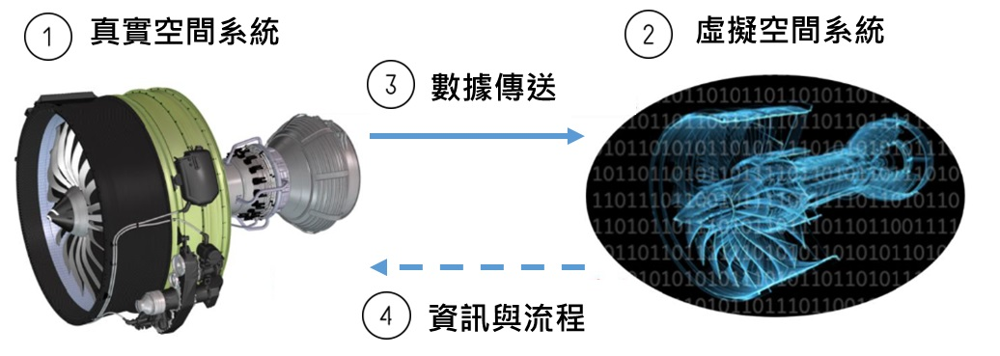
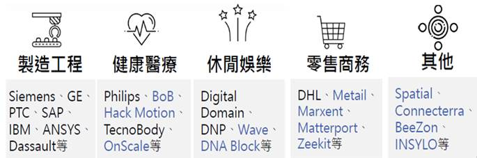
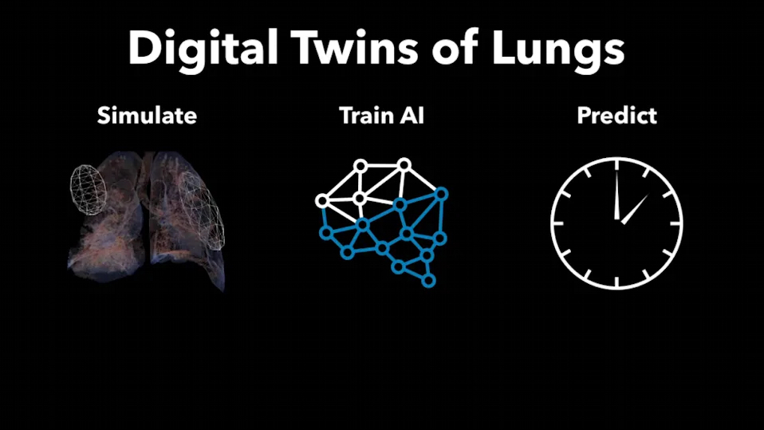
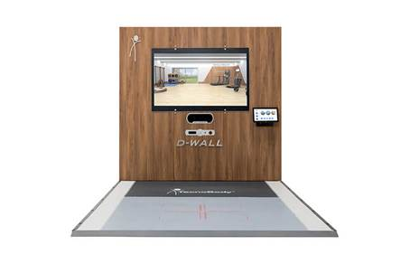
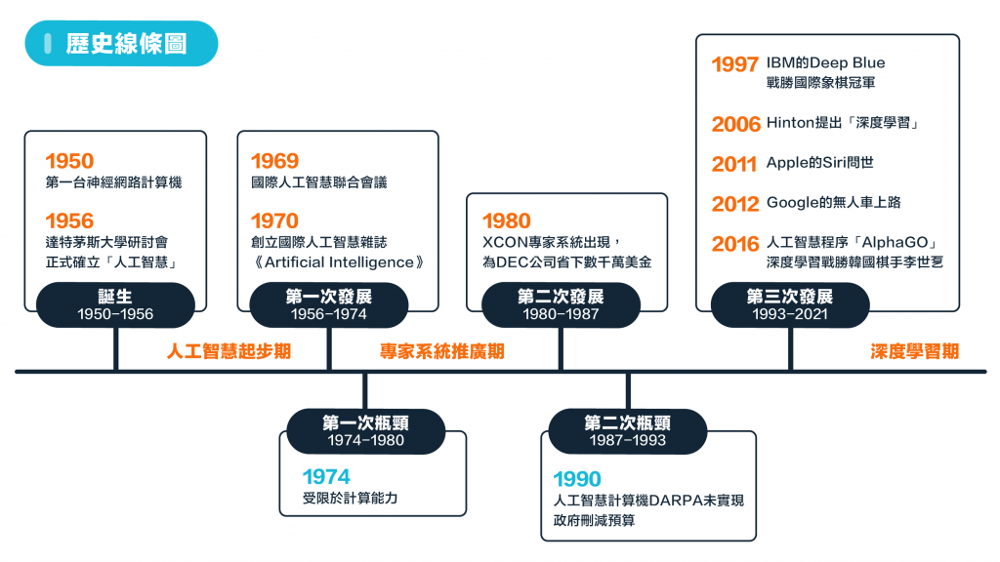
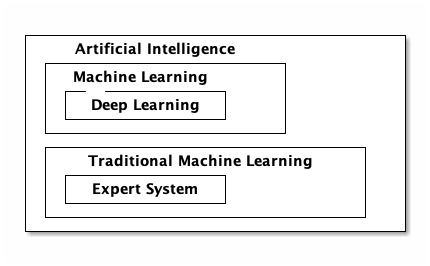

計畫二文獻探討
Table of Contents
1 數位雙生 (Digital Twins)
2020年8月，在經濟部工業局指導下， 資策會集結臺灣數位經濟四大產業協會，共同整合13家智慧內容軟、硬體業者，組成「臺灣數位雙生共創國家隊」，力邀國際間極具影響力的國際大廠Amazon AWS及Microsoft擔任技術協力夥伴，於7日舉辦「臺灣數位雙生共創平臺啟動暨跨界商媒交流會」活動，連結產官界及協會等單位共同觀摩交流，促進我國內容產業數位雙生(Digital Twin)領域跨界發展，我國的數位雙生元年也同時宣告來臨1。
何為數位雙生? 其主要概念為何? 何以此項技術能撼動資訊產業的龍頭與國家部門攜手合作? 其應用領域與未來發展趨勢為何? 以上為本小節主要探討重點。
1.1 何謂「數位雙生」
數位雙生(Digital Twin)之概念最高起源於2002年密西根大學(University of Michigan) 之Michael Grieves教授在其產品生命週期管理(PLM)課程演講中所提出之理想概念，並且於 2014 年在其所撰寫的「Digital Twin: Manufacturing Excellence through Virtual Factory Replication 」白皮書中進行了詳細的解釋2。
Digital twin, 數位雙生，又被譯為「數位雙胞胎」、「數位模擬分身」，簡言之，是一個實體產品的數位化，以便於我們能夠在這個數字化產品上看到實際物理產品可能發生的情況，與此相關的技術包括擴增實境AR和虛擬現實VR3。
Figure 1: 數位雙生運用物理模型、感測器資料更新，整合多種維度的模擬過程，在虛擬空間中完成映射，進而更能確實反應出實體物件的全生命週期
科普一點解釋，數位分身指一個實體產品的數位虛擬分身，也就是每個產品均由兩個系統組成，一個為始終存在之實體系統，另一個則為包含所有實體系統資訊之虛擬系統(分身系統)。透過真實世界的實體系統蒐集資料，提供給軟體世界中的虛擬分身，企業就可根據數據進行分析、預測，甚至可以在數位環境下進行各種情境的模擬與測試，可透過預防方式介入，以防患未然2。
若從實際建置的角度來為數位雙生做更明確的定義，則我們可以說：「數位雙生」就是藉由真實物體的及時數據(照片、數值)，打造的 3D 模型。完整的數位雙生建置過程須包含4：
- 一個真實物體。關於其運作或使用感測器蒐集其周邊活動的的及時數據。
- 一個真實物體的 3D 模型。
- 從真實物體到 3D 模型的即時數據傳送。
- 一個基於軟體的操作過程，根據收到的即時數據，使 3D 模型的視覺表現與真實物體保持一致。
數位雙生的概念出現已久，為什麼在近年逐漸成為顯學？主要是如物聯網、大數據分析、人工智慧、雲端運算等各個技術與能力逐漸成熟，由於在蒐集資料、運算模擬的可行性變高，因而開始被產業接受且漸漸流行5。
1.2 「數位雙生」四要素
物理世界的設備、產線是摸得著，但不可諱言，在真實世界裡，產品在生產過程的加工、組裝等程序上，難免稍有誤差、公差，而後續產品被使用磨耗、失真、維修的狀態，更充滿不可預測性，因此要讓真實產品與數位模型保持一致，無疑難上加難，這也使得所有在數位模型上執行的模擬分析，不見得具備有效性。反觀Digital Twin，則充分運用物理模型、感測器資料更新，輔以歷史運行數據，並整合多種維度的模擬過程，在虛擬空間中完成映射，進而更能確實反應出實體物件的全生命週期歷程3。
數位雙生概念包含四個關鍵要素(圖2)，分別為真實空間中的實體產品、虛擬空間中的虛擬產品、從真實空間到虛擬空間的數據傳輸，以及從虛擬空間反映真實空間的資訊和流程(如在研發和生產階段，虛擬空間可以產生樣品和產品的生產；在營運階段，虛擬空間可以反映和預測真實產品的運作狀態)2。

Figure 2: 數位雙生四關鍵要素(資料來源：產科國際所)
而從圖2也能看出，發展數位雙生技術需要大量的資料收集、整合，而為了讓數位雙生可以查詢現實世界實體系統狀態，並在狀況產生變化時提高回應的能力，以及即時推播通知，數位雙生需結合如機器學習(Machine Learning)、人工智慧(AI)等技術進行資料分析，並利用儀表板以視覺化方式呈現，最後也能結合資料分析平台來發展具備模擬情境、預測功能之混合模型(Hybrid model)，以提供見解(Insight)或建議，並提供決策制定方向2。
1.3 「數位雙生」的目標
數位孿生的主要目標有二：降低成本、提升效率。若由研發、製造、上市、服務等面向分析，數位雙生的目標如下6：
縮短產品開發週期與成本
透過數位雙生，我們得以在虛擬世界進行模擬，減少實物測試 (原型製作Prototyping）的次數，進而在品質保持的同時，降低成本、縮短開發時間，更有助於少量多樣的生產模式。
降低維護成本，提升服務品質
成功生產實物後，我們可以透過資料回傳，建立新的數位雙生，使用者得以在虛擬環境下即時監測實物，進而降低維護成本；廠商也能透過數位雙生，蒐集使用者的使用問題，提升售後服務的品質。
提升產品與企業價值
當我們將數位雙生應用於整條產品生命週期上，我們便能讓這些數據具有連續性，串連研發至服務的資料，因而能從各方面提升產品的品質與價值，例如：讓研發與製造部門更了解彼此狀況，解決理想與實務之間的問題；研發部門能取得實際使用數據，挖掘使用者使用需求，進而提升產品價值等等。
與物聯網 IoT、AI 機器學習、雲端運算、大數據分析、5G 結合產生綜效
隨著蒐集資料、運算模擬的技術越發進步─透過物聯網、機聯網蒐集大量數據，雲端運算、5G 加快數據傳輸速度，大數據分析和機器學習預測和反應未來，數位雙生的效益與價值更得以實現與強化。
1.4 「數位雙生」應用領域
近年來數位雙生（Digital Twin）的熱度不斷成長，2017～2019連續三年被Gartner納入年度十大策略科技趨勢，2020年則融入其他趨勢中；美國工業大廠奇異（GE）宣稱，2019年間運用數位雙生，幫助製造業客戶節省約1.9億美元；MarketsandMarkets則預估，全球數位雙生市場將從2019年的38億美元，2025年成長至358億美元，複合年均成長率達45.4%7。
資策會產業情報研究所（MIC）產業分析師柳育林指出，數位雙生的基本概念，是運用、結合IoT、AI、AR／VR等多種智慧科技，透過數據蒐集與模擬分析，對實體人事物進行數位化映射，作為各個應用領域的解決方案，可帶來改善決策等效益。除了較受關注的製造、工程產業以外，數位雙生也可應用在休閒娛樂、零售商務等其他領域7。以下為數位雙生於各領域典型應用之範例簡介：

Figure 3: 數位雙生應用型態與領域代表業者(資料來源：MIC，2020年6月 )
航太業
航太產業為數位雙生最早應用的領域，基於該產業在安全性上的高度要求，因此業者已利用數位雙生技術透過虛擬情境的模擬測試，提早因應或規避各種危險、提高飛航安全2。
美國航空太空總署 (NASA) 於2011年便提出此應用概念，希望透過數位雙生模擬飛機與太空船的運作，並達到主要三個目的：提高任務成功率、延長使用壽命和降低維護成本6。美國國防部則將數位雙生技術應用於航空航太飛行器的安全維護與保障。首先在數位空間建立真實飛機的模型，並通過傳感器實現與飛機真實狀態完全同步，每次飛行後，根據結構現有情況和過往載荷，即時分析評估是否需要維修，能否承受下次的任務載荷等3。
美國空軍研究實驗室（AFRL）2013年發布的Spiral 1計劃也是數位雙生的應用，該AFRL與通用電氣（GE）和Northrop 簽訂了2000萬美元的協議以開展此項工作。計劃以現有美國空軍裝備F15為測試台，集成現有最先進的技術，與當前具有的實際能力為測試基準，從而標識出虛擬實體還存在的差距。此計畫的最新結果就是設計出了最新版的F15 2040c ，最令人訝異的是 F15第一版是在40年前的1970年代，至今仍然日新月異，比昂貴的F35、 F22更好用3。
通用電氣子公司通用數位（GE Digital）在2019年協助8,000組客戶資產（設備）引入了數位雙生系統，並替客戶節省了1.87億美元（約新台幣56.2億元）的營運成本，這些設備包括飛機引擎，電廠渦輪，以及一般製造業流水線的包裝機等8，目前歐美航空都已紛紛投入此技術。
航運業
歐洲最大的港口鹿特丹港，則利用IBM Watson物聯網技術打造了一個數位雙生的「虛擬港」，在碼頭設施、港口水域大幅度佈署感測器、感測浮標、IoT智慧貨櫃、「數位海豚」等，持續偵測潮差、濕度、海流和運輸狀況等。管理室對於港口狀況的全控，使惡劣海象下的船對船（Ship to Ship）貨物轉運成為可能，大幅降低了營運成本8。
鹿特丹港每年約有4億6100萬噸貨物、14萬艘貨船進出。鹿特丹港智慧基礎架構IoT業務顧問Vincent Campfens坦言，過去大多仰賴靠傳統的無線電和雷達，來引導這麼多的船隻入港，但這些曾是最新的技術，已經趕不上日益增長的需求，因此，鹿特丹港需要數位轉型。鹿特丹港的目標是在2025年實現「港內航運連網」（connected shipping）。就像無人駕駛車一樣，讓入港船隻可以自動航行在港內水道，不需像過去那樣得領航船和引水人的指揮，才能入港，停泊船隻可以彼此能連網溝通，來避免互撞。為了實現這個目標，鹿特丹預計完成的多項數位轉型計畫:
建立數位分身（Digital Twin）為連網航運做準備
Vincent Campfens指出，港方借助IBM的IoT技術來建立鹿特丹港的數位分身，希望能準確地涵蓋鹿特丹港的所有資料來源，包括港口船隻動態、基礎設施、天氣、地理和水深資料等。數位分身的資料也可用來模擬各種可能的情境，讓相關人員了解如何更有效率地安排船務。因為鹿特丹港每年有十幾萬艘船隻進出，光是安排停泊位置，就得花上幾個小時；但數位分身能讓港務人員同時檢視各方資訊來考慮船隻的停泊，Vincent Campfens估計，每天可以減少8萬美元維運費用，也可以讓船隻少等一小時。
水文及天氣預測
除了用來建立數位分身，鹿特丹港也開始結合IoT、AI和第三方的智慧天氣資料（smart weather data），如，來量測各種關鍵統計數據，例如預設可用的泊位數。簡單來說，準確的水文和天候資料，可以幫助船公司決定入港的最佳時間。IBM旗下天氣公司提供準確的天氣資料，這些資料，如氣溫、風速、（相對）濕度、水位和潮汐潮流等資料，能讓港務人員更精準地預測每一天的能見度，來計算船隻離港，全港淨空船隻的程度。此外，透過海水和風速和風向的預測，港方也能判定船隻是否能順利入港。
船型3D列印
另外，鹿特丹港和30家合作伙伴聯手，成立了一間3D列印實驗室來進行研發，稱為RAMLAB（Rotterdam Additive Manufacturing LAB）。這間3D列印實驗室可以為海港和船公司用更便宜的成本，打造工業用船舶零件，這也是這個領域的第一間3D列印實驗室。甚至利用了IBM認知IoT技術，以機器手臂，逐層疊銲出高品質的金屬螺旋槳等。一般來說，傳統製造某個船舶零件得花上6到8個禮拜，但3D列印實驗室能在200個小時內完成，可以節省許多時間，讓零件製造更快速。
數位海豚（Digital Dolphins）
最後一項鹿特丹港的IoT應用是數位海豚計畫。什麼是數位海豚？並不是要打造出一支機器海豚，而是結合智慧化的碼頭駁岸，和內建感測器的浮標，來協助船與船之間的貨物轉移，過程中還能按時間序列蒐集下船隻狀態和周遭環境。這些數位海豚（浮標），將可以讓港務人員更了解靠泊碼頭的狀態和使用情況，對周遭水域和天氣狀況也有更多認識。
智慧工廠
數位雙生除了簡化並加速調試過程，數位模擬還有助製造商進行虛擬測試。但透過CAD模型，製造商可以在機器仍在建造時，透過虛擬測試，避免產品與機器在製造出來後產生嚴重問題。虛擬測試的經驗加上模擬物理的知識，原本的電腦繪圖技術也可以基於這些來進行優化，在虛擬環境下，對機器進行修正，由於測試僅是虛擬的，製造商甚至可以嘗試對產品進行更大膽的研究與實驗，來得到更多數據與經驗。這樣的做法可以幫助製造商節省開銷，藉由多次的機器虛擬測試來確保機器產出的品質，同時也可以嘗試創造出新的商業模式，下一步就是要讓終端消費者的生活能越簡單容易越好。不僅如此，數位雙生降低虛擬調試時間，大幅節省成本3。
西門子的智慧工廠舉世聞名，除了智慧生產外，利用數位雙生改造製造工程，才是優化生產的關鍵。西門子在機械設備等地方布建感測器蒐集數據，結合系統數據串連至西門子開發的MindSphere平台(圖4)，創建分身模擬生產情境並並進行數據分析，透過視覺化監控、模擬產品開發與生產運作等動態調適，幫助工廠提升生產效率。柳育林舉例，西門子利用數位雙生技術，幫助國際塗料製造商Dulux澳洲廠，大幅降低製造模型成本，最低批量從5,000升降至100升、處理循環快8倍7。

Figure 4: 西門子利用數位雙生在工廠打造製程分身(資料來源：Siemens，MIC整理，2020年6月 )
又如電動車大廠特斯拉(Tesla)，特斯拉每賣出一輛汽車，便會在其系統建立一數位雙生。透過搜集各車主、車輛的使用問題，他們能夠隨時調整更新車輛系統，除了能提供車主更好的體驗，更能將搜集到的使用需求與習慣，應用於新車輛的研發上6。
無論對機器製造商或是終端使用者來說，數位模擬技術助益良多，同時也讓雙方都可瞭解到該如何得到數據，以及如何將數據正確使用在正確的地方，如此一來可以透過虛擬測試來改變及調試機械工具，讓工具在生產出來後能夠確保品質與效率，如此便不需要實際透過機器測試，減少時間與成本。也能降低機器發生停機意外的機率3。
智慧城市
最常使用也有最突出用途的「數位雙生」案例就是打造虛擬城市，也就是使用「數位雙生」來監控城市基礎設施和進行未來規劃。「數位雙生」可協助城市的管理者們監控從交通設施運作到橋樑維護的各個方面，甚至能夠使用預測數據模擬洪水，以進行防災規劃8。

Figure 5: 虛擬新加坡 Virtual Singapore ( Source: 3ds.com )
2014年，新加坡政府與達梭系統 (Dassault Systèmes) 合作開發新加坡的數位孿生「虛擬新加坡」(Virtual Singapore)(圖5)，讓用戶得以 3D 的方式檢視整個城市隨著人口成長、新建設和其他主要活動的發展與成長。新加坡的政府與企業也能透過這個數位孿生，針對各項建設與專案，去實驗、研發、規劃與決策6。
真人數位雙生
數位雙生技術同樣可以用在休閒娛樂產業上，美國新創DNABlock的聯合創辦人Christine Marzano，兼具演員、模特身分，目前致力發展名人分身展演等創新事業，公司觸角已延伸至區塊鏈名人分身對戰遊戲，角色包括McAfee創辦人等。DNABlock利用多種角度攝影捕捉量測名人，同時間拍攝多張不同角度照片，匯集名人影像數據，並運用AI等技術創建分身，融入特定特質在名人分身上，再透過Replickant動畫引擎添加特定特質。由於名人分身這種擬真展演的模式，可以突破時間與地理空間的限制，適合應用在跨地展演走秀7。
Figure 6: 名模Christine Marzano全心投入自己的數位模特兒事業（Source: BBC）
數位雙生應用於時尚業的產物即所謂的「數位走秀」，即，設計師得透過模特兒的數位雙生，在剪裁出衣服前，預先在虛擬環境裡模擬衣服穿在模特兒身上、在伸展台展示的模樣。以知名名模 Christine Marzano 為例，他雖已全心投入自己的數位模特兒事業，其數位雙生Christine 2.0 仍受時尚品牌雇用，試穿時尚衣服，以她的台步在伸展台上走秀6。
數位雙生在娛樂產業的另一應用典範為Wave，線上虛擬娛樂平台Wave，則是把AR技術應用在打造獨一無二的虛擬音樂會，將藝術家轉換為分身並投射到虛擬舞台上，搭配每個藝術家獨特風格的表演方式，打造令人驚嘆的視覺效果。Wave利用感測套裝和體感手套，捕捉身體、手部等動作數據，即時匯入Wave平台，創建虛擬化身投射虛擬舞台，可融合大量絢麗的影音效果，觀眾可用VR裝置在Wave Club觀看互動，亦可於FB、YouTube等平台觀看7。
迄今為止，Wave已經和超過20位藝術家合作舉辦音樂會，去年和電子小提琴家Lindsey Stirling的VR音樂會，吸引全球各地40萬觀眾欣賞，Wave使用XSens 3D和Manus VR Gloves捕捉Lindsey Stirling所有動作和舞蹈，並實時轉換為VR，為觀眾提供更高的臨場感。根據Wave官方表示，因應疫情已湧進更多的音樂家分身表演需求7。
醫療應用
新冠病毒肆虐，全球許多機構開始思考以「數位雙生」對抗疫情的解方。而在IoT逐漸成熟的未來，「數位雙生」帶來虛擬與實體板塊的移動，也將為各產業領域帶來衝擊。2020年4月初，數位雙生（Digital Twin）技術在疫情嚴重的倫敦派上了用場8。英國IoT系統商IOTICS於2020年4月啟動Critical Care專案，該專案採用數位雙笁技術，並結合來自各地醫院設備的IoT數據，目前已經創建出醫院數位雙生平台，可顯示出倫敦市內重症監護病床數、維生系統等關鍵醫療資源的即時使用情況，並鼓勵地方當局和醫院輸入其基本病床可用性數據，以提供英國國民保健署(NHS)決策參考。該平台除可提供重症監護病床數目即時監控，民眾也可根據床位使用情況做出決策，如床數不夠也能選擇進一步的自我隔離，醫院和工作人員也可以優化資源，在不同醫院之間進行協調，並引導患者至有閒置的病床和呼吸器醫院等。該平台也可以快速整合相關數據來源，以保持擴展和建構醫院全貌，每家醫院的數位雙生都可以即時更新數據與分析。未來該平台將陸續增加其他數據來源，例如COVID-19測試結果、呼吸器利用率和患者管理等資訊，以提供政府更有效的決策參考依據2。
同樣是為了因應COVID-19疫情，美國雲端平台業者OnScale與生物力學模擬技術提供商LEXMA Technology合作，在2020年3月啟動Project BreathEasy計畫，利用匿名肺炎患者的多組核磁共振（CT）照片，建構出病人肺部的數位雙生(如圖7)。OnScale的作法是匯集患者斷層掃描、X光，以及數千種肺部氣體與血液流動資料至平台，創建分身模擬肺部情境，持續量測模擬訓練AI，以快速預測通氣和插管過程中的氧氣與血流量，並決定有限的呼吸器設備應該提供給哪位患者，優化呼吸器的運用率，幫助醫生做出更好的治療決策。OnScale表示，由於COVID-19的病例數遠超過可用呼吸器資源10倍以上，藉由數位雙生技術至少可提高呼吸器10%運用率，挽救更多病患的生命，這個計畫目前正在進行驗證測試中7, 8。

Figure 7: 新冠肺炎的計畫 Project BreathEasy，重建出肺炎患者肺部的「數位雙生」(圖片來源：Ian Campbell)
在運動健身層面，義大利一家健身、健康和康復系統開發商TecnoBody，利用Digital Twin打造運動數位雙生，已有數十家健身運動及護理機構導入TecnoBody。TecnoBody所研發的產品「D-Wall」(圖8)，是結合智慧顯示器+體感地墊，只要匯入身體資料，結合3D鏡頭掃描與體感地墊感測數據，就可以快速同步建立3D模型，創建分身同步運動情境，反饋即時資訊到鏡面，識別關節與分析各種動作，再藉由遊戲化、視覺化動作引導評估，量身客製實現運動目標，或是促進復健效果。

Figure 8: TecnoBody旗下的D-WALL，可為每個動作均提供即時的生物反饋(圖片來源：TecnoBody)
零售商務
總部位於英國倫敦的Metail，替服裝零售商提供虛擬試衣間服務，也就是為消費者打造數位雙生，消費者只要上傳兩張自己的照片，短短幾分鐘內就能創建自己的3D逼真照片模型。Metail的創新方案同時解決兩種需求，對於零售商提供經濟實惠且高效的電子商務模型攝影過程；消費者可以從線上自由的嘗試衣服，就好像真的穿上商品後拍照一樣。
Figure 9: Metail的虛擬試衣間(資料來源：Metail，MIC整理，2020年6月)
透過Metail，網購用戶可直接上傳兩張照片，或輸入身高、體重、三圍等數據，Metail匯集消費者體態資料後，創建分身模擬穿搭情境，透過MeModel建立個人化模型(如圖8)，進行穿搭同時學習用戶偏好，透過量身穿搭與推薦服飾，幫助零售業者提升銷售與降低退貨率。Metail目前的合作品牌客戶包括ASOS、Tesco、House of Holland等，宣稱已取得超過72億筆數據、幫助網路服飾業者銷售成長22%。
1.5 小結
關於數位雙生的未來，Research And Markets的預測顯示，在2025年89%的IoT設備都將含括某種數位雙生的形式，而數位雙生更將在2027年，成為IoT應用的標準功能與規格。事實上，數位雙生作為工業4.0虛實融合系統（Cyber Physical System,CPS）的一環，也就是在物理空間內的所有實體（如設備）狀態，都能在虛擬空間（如數位控制台）得到即時的一對一對照，而在虛擬空間中的操作，也能夠及時反饋到物理空間中，進而讓生產效率達到即時的最佳化8。
「數位雙生」必將成為許多不同行業的關鍵 IT 工具。根據 Engineering.com 的說法，「數位雙生」是與人工智能（AI）和機器學習（ML）並列的十大戰略性技術趨勢之一。畢竟未來的一個關鍵領域就是供應鏈，因為製造流程要依靠送達的零件來實現「準時製造」。供應鏈的「數位雙生」由許多物品和倉庫組成，可追蹤庫存和潛在交付時間。這樣的「數位雙生」能夠模擬和評估許多不同供應鏈方案的績效，為經理們提供做出優化製造過程的決策的手段。隨著採用率持續增長，有望在包括城市規劃、產品開發和工廠模擬在內的各個領域看到更多「數位雙生」的應用4。I
2 人工智慧 (AI)
「人工智慧（Artificial Intelligence, AI）」一詞，正式出現於1956年的達特茅斯夏季人工智慧研究計畫會議（Dartmouth Summer Research Project on Artificial Intelligence）中，在此之前，「能思考的機器」尚僅存在於小說或電影等人類的美麗幻想中。曾幾何時，人工智慧似乎已無所不在，不論是你口袋的手機、 你乘坐的汽車、你常逛的購物網站給你的推蔫商品、你的社群軟體、你電腦裡安裝的防毒軟體…，背後都有人工智慧默默的付出，而在某些領域，人工智慧的效能甚至遠遠高於人類。諸如9：
- 影像辨識：如Facebook用來將使用者自動標記在照片中的「人臉辨識」、停車場或收費站的「車牌辨識」、「自動駕駛系統車」、無人商店的自助結帳，或是醫學影像診斷分析系統。
- 自然語言處理：顧名思義，自然語言處理是要讓電腦能理解人類語言，例如藉由分析詞意以及詞句間的關係，可以讓我們在網路搜尋（例如：使用Google搜尋）時能夠找到與搜尋的字詞（關鍵詞）最相關的資料，又如機器翻譯、詐騙郵件偵測、Google的搜尋建議更正，抑或是那些用來分析社群媒體、娛樂產業、觀察網路網民活動的輿情分析系統等。
- 語音識別：語音辨識技術為我們帶來最大的方便即是省去動手的麻煩，典型的應用就如我們常用手機語音助理（例如：Siri語音助理）所提供語音撥號、語音輸入、語音問答等功能，又如家用電視機的語音操控介面，而Google於2018年5月在Google I/O大會首次向世人展示的Google Duplex則更進一步能透過語音助理撥電話與餐廳人員對話進而完成訂位工作。
- 醫療照護：人工智慧在醫療照護方面的應用從基本的協助醫生進行醫療數據分析、疾病診斷，到病患生理數據即時監控、一般疾病諮詢，一路延伸至家庭或是老人照護陪伴等。
然而，不論是從 1942 年的ABC或是 1944 年的MarK I，電腦的問世都已過去半個世紀了，為何到 2010 年後，人工智慧才成為熱門話題？此問題要回溯人工智慧的發展歷史。
2.1 人工智慧發展歷史
人工智慧的發展歷史，我們可大致歸納以下的階段(圖10)10, 11：

Figure 10: 人工智慧歷史線條圖
誕生｜1950-1956
1950年，Marvin Minsky 的大四學生，建造第一台神經網路計算機；且當年被稱為「計算機之父」的 Alan Turing也提出—圖靈測試，他認為一台機器若能夠跟人對話，而不被人識出他的機器身份，那這個機器就具備智慧。1956年，達特茅斯大學的學術研討會，不同領域的科學家正式確立「人工智慧」這術語。由當時的數學助教、現任斯坦福大學教授 John MeCarthy 聯合哈佛大學、麻省理工學院、IBM研究中心負責人、貝爾實驗室信息部數學研究員…等人共同發起。
這場會議，讓 John MeCarthy被稱為人工智慧之父，這個具有歷史意義的會議，標記了人工智慧成為一門新興學科。之後，John MeCarthy 與 Marvin Minsky 共同創建第一座人工智慧研究組織「MIT AI LAB」，美國也開始有多個人工智慧研究組織。
第一次發展｜1956-1974
1956年達特茅斯大學的研討會後，在之後的十多年，大發明的時代來臨，人工智慧的研究在機器學習、模型識別、問題解決、專家系統及人工智慧語言…等各方面都贏得許多成就。計算機被廣泛應用在數學、自然語言領域，解決代數、幾何、英語…等問題。當時的許多學者甚至認為，未來二十年內，機器可以完成人能做的全部事情。
此階段的人工智慧主要成就如下：
- 感知機 (深度學習的雛形) 被提出
- 用機器證明「數學原理」定義，也提出歸結原理
- 發展出模型識別程序，並編製可分辨積木構造的程序
- 編制通用的問題解決程序 (General Problem Solver，GPS)
- 研製成功專家系統 DENDRAL
- 研發人工智慧語言 (List Processing，LISP)
- 感知機 (深度學習的雛形) 被提出
第二次瓶頸｜1987-1993
1987年，命運又再次碾壓人工智慧，由於AI專家系統的應用領域過於限縮，且要更新及維護成本過高，只維持了7年，就宣告結束。
同期，美國的Apple和IBM生產的桌上型電腦性能都超過當時的通用計算機，加上「個人電腦」的理念不斷蔓延，讓人工智慧又再次遇到財務困難。
當時的主要挑戰包括:
- 桌上型電腦和個人電腦的理念帶來衝擊
- 企業對AI的神話和冷落，讓AI化為泡沫
- 無法突破計算機性能的瓶頸
- 缺乏處理龐大數據的訓練機器
- 桌上型電腦和個人電腦的理念帶來衝擊
第三次發展｜1993-2021
在摩爾定律下，計算機性能不斷突破。雲端計算、大數據、機器學習、自然語言和機器視覺…等領域也有快速的發展發展迅速。
至此，人工智慧開始大放異彩，主要成就包含：
- 1990年代中期，神經網絡技術的發展，也讓人們對AI開始有客觀、理性的認知，慢慢進入平穩發展時期。
- 1997年，IBM的計算機系統Deep Blue戰勝國際象棋世界冠軍Garry Kasparov，這也成為重要的里程碑。
- 2005年，Stanford開發的機器人在沙漠上自動行駛210公里，贏得DARPA挑戰大賽頭獎。
- 2006年，Geoffrey Hinton提出多層神經網絡的深度學習算法、Eric Schmidt在搜索引擎大會提出「雲端計算」概念。
- 2007年，Adam Cheyer創立Siri，Apple公司在2010年完成收購。
- 2010年，Sebastian Thrun 領導的Google無人駕駛車曝光，創下了超過16萬公里無事故紀錄。
- 2011年，IBM Waston參加智力遊戲《危險邊緣》，打敗最高獎金得主Brad Rutter和連勝紀錄保持者Ken Jennings。Nest Lab發表第一代智慧恆溫器Nest，它能了解用戶的習慣，並自動調節溫度。
- 2012年，Google發布個人助理Google Now。
- 2013年，深度學習在語音和視覺識別率獲得突破性進展。
- Facebook創始人Mark Zuckerberg參加的神經信息處理系統(NIPS)技術會議，讓人工智慧從學術研究走向商業領域。
- 2014年，微軟亞洲研究院發佈人工智慧聊天機器人和語音助手Cortana。
- 2015年，Facebook發布一款基於文本的人工智慧助理M。
- 2016年，Google公司的人工智慧程序「AlphaGO」，與韓國棋手李世乭在圍棋上正面交鋒。AlphaGo 所使用的深度學習技術引起全球關注。
- 2017年，AlphaGo在中國烏鎮圍棋峰會，挑戰排名世界第一的圍棋冠軍柯潔，以3比0獲勝。
- iPhone X 配備前置3D 感應攝像頭 (TrueDepth)，臉部識別點達到3萬個，具備人臉識別、解鎖和支付等功能；配備的A11 Bionic神經引擎使用雙核設計，每秒可達到運算6千億次。
- 1990年代中期，神經網絡技術的發展，也讓人們對AI開始有客觀、理性的認知，慢慢進入平穩發展時期。
2.2 人工智慧的類型
2.3 Deep Learning 的概念於 2006 年提出，何以至 2012 年才得到有效應用？
- 計算速度: GPU 的計算能力由 2018 年起才有突破性的成長5

Figure 11: Floating-point operations per second for the CPU and GPU

Figure 12: Memory bandwidth for the CPU and GPU
- 大量數據
- 軟體
數學模型、軟體工具(Tensorflow)
2.4 Machine Learning v.s. Statistics
- 統計: 目的在由樣本(sample)找出真相(universe)，如，由台灣 2350 萬人口中，只選出 1000 人，得知全台生活型態、政治傾向。
- Machine learning: 目的在讓電腦由歷史資料中學習處理新的資料以解決問題。如，由醫生判讀 X 光片的資料學習判讀新的 X 光片；由一個人的刷卡及繳費行為預測他的信貸是否能準時還款？
- Machine learning 不在意真實資料的分佈，而在於根據已知推測未知。
2.5 AI, Machine Learning, Deep Learning
三者的關係如下：

Figure 14: AI, Machine, Deep Learning
- AI 可以是簡單的 decision tree 或 rule-based 的專家系統(知識庫 + 推理機制)
- Machine learning 有很多種演算法，類神經網路是其中一種。
- Hinton 於 2006 年提出的 Boltzmann Machine 為一種多層神經網路
- 學術界稱層數大於 3 的類神經網路為深度學習
- Deep Learning 則一定是類神經網路，但與其他方法最的差異在於能否自動進行「特徵工程」(feature engineering)。
- 在開發 machine learning model 時，我們會基於觀測值計算出一些衍生變數(derived variables)，再將其加入決策判斷的條件中，以增加 model 的預測準確度。例如，由男生的身高體重判斷高血壓的機率，而 BMI 即為一更佳的衍生變數。
- 機器學習模型的成效往往取決於特徵工程的品質，但在某些領域下，特徵工程很難靠領域專家取得好的結果，例如非結構化資料以及序列資料，因為這些資料沒有標準答案，這類問題就適合以深度學習來解決，因為深度學習連特徵工程也可以自行完成，即，由原始資中自行產生衍生變數。
- 非結構化資料：聲音、影像、影片
- 序列資料：sensor 資料、金融市場資料、交易資料
- 非結構化資料：聲音、影像、影片
- 考慮採取傳統機器學習或深度學習時，一個重要關鍵是資料量，若資料量太小，深度學習不一定會有更好的表現。Google Translate 在訓練文件量少於一億篇時，傳統機器學習表現較佳；在文件量超過十億後，深度學習效果就超越傳統機器學習。

Figure 15: BLEU scores for English-Spanish systems trained on 0.4M to 385.7M words of parallel data. Source: Koehn and Knowles (2017) and GPU
2.6 AI 發展的三個里程碑
- 1950: 設定 AI 目標
- 1980: 以 Machine Learning 為主要手段
- 1980 - 1990: Neural Network
- 2006: Deep learning (ImageNet Classification with deep convolutioanl neural networks, 引用達上萬次)
- 2010: Deep Learning